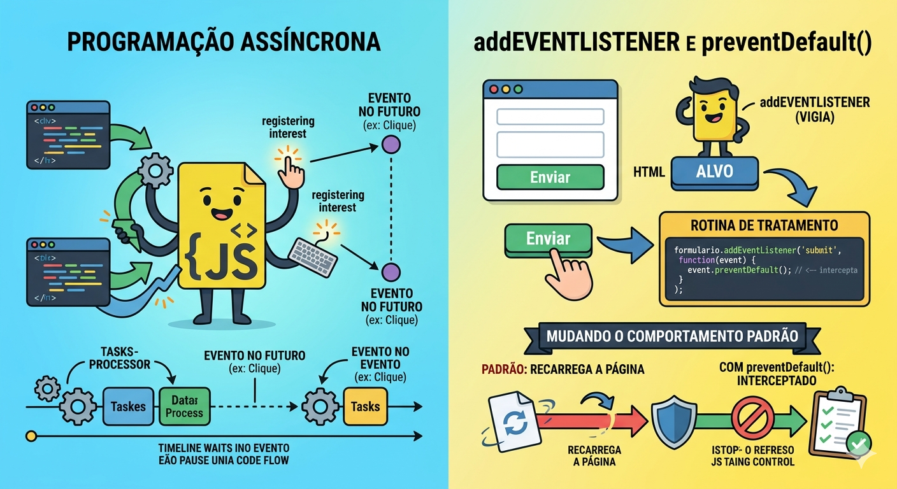
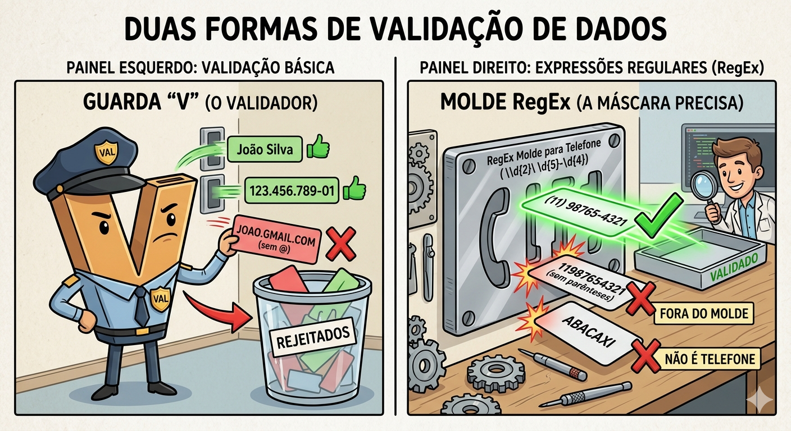

Descrição: Esta aula aborda a transição crucial entre uma página estática e uma interface interativa e segura. Vamos focar na experiência do usuário (UX) e na integridade dos dados por meio da manipulação de eventos do DOM, lógica de validação com expressões regulares e feedback visual dinâmico.
Imagine que somos a equipe de desenvolvimento de uma grande varejista na véspera da Black Friday. À meia-noite, milhares de usuários tentam se cadastrar simultaneamente. Se o nosso sistema permitir que dados "sujos" (CPFs com letras, e-mails sem "@", campos vazios) cheguem ao servidor, cada erro gerará uma requisição desnecessária que consome banda e processamento.
Em um cenário de alto tráfego, este "lixo eletrônico" pode sobrecarregar o banco de dados e derrubar o site, causando prejuízos milionários. Validar os dados no navegador do usuário não é apenas uma questão de estética, é uma estratégia de performance e disponibilidade.
"Antes de começarmos, vamos refletir: se vocês fossem os desenvolvedores responsáveis por salvar essa Black Friday, como fariam para garantir que o navegador do usuário 'barrasse' os dados incorretos antes mesmo de eles tentarem chegar ao nosso servidor?"
Imagine que o JavaScript é o gerente de um restaurante muito movimentado. Se ele ficasse parado na porta esperando cada cliente chegar, o resto do restaurante pararia. Em vez disso, ele usa um sistema inteligente de Eventos. Aqui está uma explicação detalhada e didática de como esse "vigia" funciona:
Em vez de travar o navegador esperando o usuário fazer algo, o JavaScript trabalha de forma assíncrona.
O método addEventListener é como contratar um segurança para ficar de olho em uma porta específica. Para funcionar, ele precisa de três informações básicas:
Este é um dos conceitos mais importantes quando lidamos com formulários. Muitos elementos no HTML têm comportamentos padrão. Por exemplo:
O Problema: Se a página recarregar, o JavaScript perde o controle do que estava fazendo.
A Solução: Usamos o event.preventDefault(). É como se o "vigia" desse uma ordem de: "Ei, navegador, pare! Não faça o que você faz por padrão. Eu vou assumir o controle daqui agora."
Imagine que você está em um cartório:
No código, a estrutura fica assim:
JavaScript
const formulario = document.querySelector('#meuForm');
// 1. O Alvo: formulario
// 2. O Evento: 'submit'
formulario.addEventListener('submit', function(event) {
event.preventDefault(); // 3. Intercepta o comportamento padrão (não recarrega)
console.log("Agora eu valido os dados sem a página sumir!");
// Aqui entra sua Rotina de Tratamento (Validação)
});Ficou claro como o JavaScript "escuta" o usuário sem interromper o fluxo do site?

Evite usar atributos legados como onclick diretamente no HTML. Isso mistura estrutura (HTML) com comportamento (JS), o que dificulta a manutenção do código. Sempre prefira o addEventListener no arquivo .js separado.
Validar dados é, em essência, o papel de um "segurança de balada" para o seu banco de dados. O objetivo é barrar entradas que não fazem sentido antes que elas causem problemas no sistema.
Imagine que você está preenchendo um formulário de cadastro. Se o sistema aceitasse "Abacaxi" no campo de "Telefone", como a empresa ligaria para você?
A validação serve para conferir se a informação enviada é útil e fiel ao esperado. Ela ocorre em dois momentos principais:
Se a validação comum é conferir se um campo está vazio, a RegEx é o nível mestre da conferência. Ela é uma sequência de caracteres que forma um padrão de busca.
Pense na RegEx como um gabarito vazado:
Exemplos práticos de "Moldes":
A integridade da informação é o que mantém uma empresa funcionando. Dados mal validados (o famoso "dados lixo") geram:
| Tipo de Validação | Como funciona | Exemplo |
|---|---|---|
| Simples | Verifica se o campo está vazio | input.value === "" |
| Comprimento | Verifica o número de caracteres | senha.length >= 8 |
| Padrão (RegEx) | Verifica a estrutura do texto | /\S+@\S+\.\S+/ (E-mail) |

JavaScript
// Função para validar e-mail usando uma expressão regular
function validarEmail(email) {
// O molde: texto + @ + texto + . + texto
const regexEmail = /^[^\s@]+@[^\s@]+\.[^\s@]+$/;
// O método .test() retorna true se o e-mail for válido
return regexEmail.test(email);
}
const emailDigitado = "aluno@senai.br";
if (validarEmail(emailDigitado)) {
console.log("E-mail aceito!");
} else {
console.log("Formato de e-mail inválido.");
}Embora a validação no Frontend seja essencial para a UX, ela pode ser burlada por usuários avançados. Regra de ouro: Nunca confie 100% no cliente; a validação deve ser repetida no Backend (que aprenderemos nas próximas aulas).
Nossa loja virtual está se preparando para a Black Friday! Para que as ofertas cheguem aos clientes reais, precisamos garantir que o formulário de cadastro não aceite "dados lixo" (como e-mails falsos ou senhas fracas). O seu objetivo é construir um protótipo de formulário que faça essa validação.
Como capturar dados de um formulário, evitar o recarregamento da página e usar uma RegEx para validar um e-mail.
Primeiro, vamos criar a "cara" do nosso formulário. Crie um arquivo index.html.
Observe que criamos um texto de erro (o span), mas ele começa escondido (display:none). Nós só vamos mostrá-lo se o usuário errar!
Aqui está a estrutura HTML completa e pronta para uso:
HTML
<!DOCTYPE html>
<html lang="pt-BR">
<head>
<meta charset="UTF-8">
<meta name="viewport" content="width=device-width, initial-scale=1.0">
<title>Cadastro - Black Friday</title>
<style>
body {
font-family: Arial, sans-serif;
display: flex; justify-content: center;
align-items: center; height: 100vh;
background-color: #f4f4f9;
}
form { background: white; padding: 20px; border-radius: 8px;
box-shadow: 0 4px 8px rgba(0,0,0,0.1);
display: flex; flex-direction: column; gap: 15px; width: 300px; }
input { padding: 10px; border: 1px solid #ccc; border-radius: 4px; }
button { padding: 10px; background-color: #28a745; color: white;
border: none; border-radius: 4px; cursor: pointer; }
button:hover { background-color: #218838; }
</style>
</head>HTML (continuação)
<body>
<form id="formCadastro">
<h3>Cadastro Black Friday</h3>
<input type="email" id="email" placeholder="Seu e-mail">
<span id="erroEmail"
style="color:red; display:none; font-size: 14px;">
E-mail inválido!
</span>
<input type="password" id="senha"
placeholder="Sua senha (mín. 6 caracteres)">
<button type="submit">Cadastrar</button>
</form>
<script src="script.js"></script>
</body>
</html>Por padrão, quando clicamos em "submit", o navegador recarrega a página. Nós não queremos isso! Crie seu arquivo script.js e use o comando e.preventDefault() para dizer ao navegador: "Deixe que eu assumo o controle daqui".
JavaScript
const form = document.querySelector('#formCadastro');
// Fica "escutando" o momento em que o botão de submit for clicado
form.addEventListener('submit', (e) => {
e.preventDefault(); // Impede a página de recarregar
console.log("Iniciando validação...");
// Os próximos passos vão entrar AQUI dentro!
});Agora vamos pegar o que o usuário digitou e testar no nosso "molde" de e-mail. Adicione este código dentro da função do Passo 2.
Como a RegEx funciona aqui? A variável regexEmail verifica se existe um texto, seguido de um "@", seguido de mais texto, um ponto "." e o final do domínio.
JavaScript
const email = document.querySelector('#email').value;
const senha = document.querySelector('#senha').value;
const regexEmail = /^[^\s@]+@[^\s@]+\.[^\s@]+$/;
let formValido = true;
if (!regexEmail.test(email)) {
document.querySelector('#erroEmail').style.display = 'block';
formValido = false;
} else {
document.querySelector('#erroEmail').style.display = 'none';
}Ainda dentro da função, vamos conferir se o formulário passou no teste do e-mail E se a senha atende ao requisito mínimo de tamanho.
JavaScript
// Se o e-mail estiver válido E a senha tiver 6 ou mais caracteres...
if (formValido && senha.length >= 6) {
alert("Cadastro realizado com sucesso! Dados prontos para o servidor.");
form.reset(); // Limpa todos os campos para o próximo usuário
} else if (senha.length < 6) {
alert("A senha precisa ter pelo menos 6 caracteres.");
}Caso tenha se perdido nas etapas, seu arquivo script.js deve estar exatamente assim:
JavaScript
const form = document.querySelector('#formCadastro');
form.addEventListener('submit', (e) => {
e.preventDefault();
const email = document.querySelector('#email').value;
const senha = document.querySelector('#senha').value;
const regexEmail = /^[^\s@]+@[^\s@]+\.[^\s@]+$/;
let formValido = true;
if (!regexEmail.test(email)) {
document.querySelector('#erroEmail').style.display = 'block';
formValido = false;
} else {
document.querySelector('#erroEmail').style.display = 'none';
}
if (formValido && senha.length >= 6) {
alert("Cadastro realizado com sucesso! Dados prontos para o servidor.");
form.reset();
} else if (senha.length < 6) {
alert("A senha precisa ter pelo menos 6 caracteres.");
}
});Ao testar no navegador, se você digitar "joao.gmail.com" (sem @), a mensagem vermelha deve aparecer. Se preencher tudo certinho, um alerta de sucesso vai pular na tela e os campos ficarão em branco novamente.
Este exercício, intitulado "O Guardião do Cadastro da Black Friday", é uma excelente introdução prática ao desenvolvimento web front-end. Ele foca em como tornar uma página estática em uma aplicação interativa e funcional, garantindo que apenas dados válidos cheguem ao sistema.
Abaixo, apresento uma explicação didática dividida pelos pilares do projeto:
Em eventos de alto tráfego como a Black Friday, as empresas não podem perder tempo ou recursos com cadastros falsos. O exercício ensina a criar uma "barreira" no lado do cliente (o navegador) para validar informações antes mesmo de enviá-las a um servidor.
O código HTML define os elementos que o usuário vê:
O arquivo script.js é onde a mágica acontece. Ele segue três etapas lógicas cruciais:
A. Interrupção do Comportamento Padrão
Por padrão, formulários recarregam a página ao serem enviados. O comando e.preventDefault() é a "chave" que trava esse comportamento, permitindo que o JavaScript valide os dados sem que a página "pisque" ou limpe os campos antes da hora.
B. O Molde Mágico: RegEx
A validação de e-mail utiliza uma Expressão Regular (RegEx). A variável regexEmail funciona como uma máscara de busca que verifica se o texto segue o padrão obrigatório: texto + @ + texto + . + final do domínio. Se o que foi digitado não se encaixar nesse molde, o erro é exibido.
C. Lógica de Condicional Dupla
O formulário só é considerado "aprovado" se passar em dois testes simultâneos:
O exercício demonstra de forma clara o fluxo de manipulação do DOM (Document Object Model):
| Conceito | Aplicação Prática no Exercício |
|---|---|
| UX (Experiência do Usuário) | Mostrar mensagens de erro específicas sem recarregar a página. |
| Segurança Básica | Garantir que senhas não sejam curtas demais. |
| Limpeza de Estado | Resetar o formulário após o sucesso para um novo uso. |
Este exercício é fundamental porque reflete um cenário real de desenvolvimento, onde o programador atua como o "guardião" que protege a integridade do banco de dados da aplicação.
O que você achou da lógica de usar o preventDefault()?
Pergunta: Posso usar apenas o atributo required do HTML5 em vez de JavaScript?
Resposta: O required é ótimo para uma camada inicial, mas o JavaScript permite validações muito mais ricas, como comparar dois campos de senha ou verificar a força da senha em tempo real. O ideal é usar ambos.
Pergunta: Qual a diferença entre event.target e event.currentTarget?
Resposta: event.target é o elemento exato que você clicou (pode ser um ícone dentro do botão). event.currentTarget é o elemento onde você registrou o addEventListener (o botão em si).
Pergunta: O preventDefault() cancela todos os eventos?
Resposta: Não, ele cancela apenas o "comportamento padrão" do navegador para aquele evento específico (como abrir um link ou enviar um formulário).
Pergunta: Como validar se dois campos de senha são iguais?
Resposta: if (senha.value === confirmaSenha.value) { ... }. É uma validação lógica simples, mas vital para a segurança do cadastro.
Pergunta: Por que usar classList.add('erro') em vez de style.color = 'red'?
Resposta: Usar classes mantém o CSS no arquivo CSS. É mais limpo e fácil de alterar o design de todos os erros da aplicação de uma só vez.
Crie este arquivo HTML. Ele contém um formulário de cadastro com campos para Nome, E-mail, Senha e Confirmação de Senha, além de elementos de erro ocultos.
HTML
<!DOCTYPE html>
<html lang="pt-BR">
<head>
<meta charset="UTF-8">
<title>Cadastro - Validação Progressiva</title>
<style>
body { font-family: Arial, sans-serif; display: flex;
justify-content: center; align-items: center;
height: 100vh; background-color: #f4f4f9; }
form { background: white; padding: 20px; border-radius: 8px;
box-shadow: 0 4px 8px rgba(0,0,0,0.1);
display: flex; flex-direction: column; gap: 10px; width: 300px; }
input { padding: 10px; border: 1px solid #ccc; border-radius: 4px; }
button { padding: 10px; background-color: #28a745; color: white;
border: none; border-radius: 4px; cursor: pointer; }
.erro-msg { color: red; font-size: 12px; display: none; }
.input-erro { border-color: red; }
</style>
</head>HTML (continuação)
<body>
<form id="meuFormulario">
<h3>Crie sua Conta</h3>
<input type="text" id="nome" placeholder="Seu nome completo">
<span id="erroNome" class="erro-msg">Por favor, preencha seu nome.</span>
<input type="email" id="email" placeholder="Seu e-mail">
<span id="erroEmail" class="erro-msg">Formato de e-mail inválido.</span>
<input type="password" id="senha" placeholder="Sua senha (mín. 6 caracteres)">
<span id="erroSenha" class="erro-msg">A senha precisa ter pelo menos 6 caracteres.</span>
<input type="password" id="confirmaSenha" placeholder="Confirme sua senha">
<span id="erroConfirmaSenha" class="erro-msg">As senhas não coincidem.</span>
<button type="submit">Cadastrar</button>
</form>
<script src="script.js"></script>
</body>
</html>Descrição: Para iniciar a manipulação do DOM sem poluir o HTML com atributos onclick, você deve selecionar o formulário pelo seu ID e adicionar um "ouvinte" para o momento em que o usuário tentar enviá-lo.
Entrega: Código JavaScript contendo a seleção do elemento form via querySelector e o método addEventListener escutando o evento submit.
Descrição: O comportamento padrão do navegador ao enviar um formulário é recarregar a página (o que atrapalha a validação client-side). Modifique a função do ouvinte de eventos criado no exercício 1 para interceptar e cancelar essa ação padrão.
Entrega: Adição do parâmetro event na função do ouvinte e a execução do comando event.preventDefault(); logo na primeira linha.
Descrição: Agora que o recarregamento foi impedido, você precisa "pegar" o que o usuário digitou e preparar o terreno para as validações. Crie também uma variável de controle para registrar se o formulário como um todo é válido ou não.
Entrega: Variáveis em JavaScript utilizando .value para armazenar os dados dos campos (Nome, E-mail, Senha, Confirmação) e uma variável let formValido = true;.
Descrição: Crie sua primeira regra de negócio. O campo "Nome" não pode ser enviado em branco ou apenas com espaços. Se estiver vazio, a mensagem de erro oculta no HTML deve aparecer e o formulário deve ser marcado como inválido.
Entrega: Uma estrutura condicional (if/else) que utiliza o método .trim() === "" no valor do nome. Se verdadeiro, altera o display do erro correspondente para block e muda a variável formValido para false.
Descrição: Expressões Regulares são padrões poderosos para validar texto. Antes de validar o e-mail preenchido, você precisa definir no código qual é o formato aceitável (algo que contenha texto, "@", texto, "." e texto).
Entrega: Declaração de uma constante regexEmail armazenando o padrão literal /^[^\s@]+@[^\s@]+\.[^\s@]+$/;
Descrição: Utilize a Expressão Regular criada no exercício anterior para testar o valor que o usuário digitou no campo de e-mail. Caso o teste falhe, exiba a mensagem de erro de formato inválido.
Entrega: Condicional if utilizando o método !regexEmail.test(emailValor). Em caso de falha, exibe a mensagem de erro de e-mail e define formValido = false.
Descrição: Para garantir um mínimo de segurança no cadastro (visando a integridade dos dados no banco), crie uma validação que impeça o envio caso a senha escolhida tenha menos de 6 caracteres.
Entrega: Condicional verificando a propriedade .length < 6 da string da senha. Se for menor, exibe a mensagem de erro específica de senha e invalida o formulário.
Descrição: Um erro comum do usuário é errar a digitação da senha. Verifique se o conteúdo digitado no campo "Senha" é exatamente igual ao digitado no campo "Confirmar Senha". Se não for, bloqueie o envio.
Entrega: Condicional if comparando os dois valores (senhaValor !== confirmaSenhaValor). Exibição do erro de senhas divergentes e alteração de formValido para false caso não coincidam.
Descrição: Como visto no fechamento da aula, usar estilos diretos (inline) não é a melhor prática. Refatore o feedback visual do campo E-mail para, em vez de apenas mostrar a mensagem, adicionar uma classe CSS específica (input-erro) ao campo input quando ele for inválido, e removê-la quando for corrigido.
Entrega: Atualização da validação do Exercício 6 incluindo os comandos inputEmail.classList.add('input-erro') (no caso de erro) e inputEmail.classList.remove('input-erro') (no bloco else).
Descrição: Após todas as validações, se o usuário preencheu tudo perfeitamente, a variável de controle criada no Exercício 3 terá sobrevivido intacta. Exiba uma mensagem de sucesso ao usuário e, em seguida, limpe todos os dados do formulário para que ele fique pronto para um novo cadastro.
Entrega: Condicional final verificando se formValido continua true. Se sim, execução de um alert("Cadastro realizado com sucesso!") seguido da chamada da função nativa formulario.reset();.
Tudo o que construímos hoje garante a solidez das letras "C" (Create) e "U" (Update) do nosso CRUD. Na entrega final da SA, vocês terão telas de cadastro e edição. Sem os validadores que aprendemos hoje, o banco de dados que criaremos com PHP seria "bombardeado" com dados mal formatados, violando os critérios de Integridade e Usabilidade da nossa rubrica de avaliação.